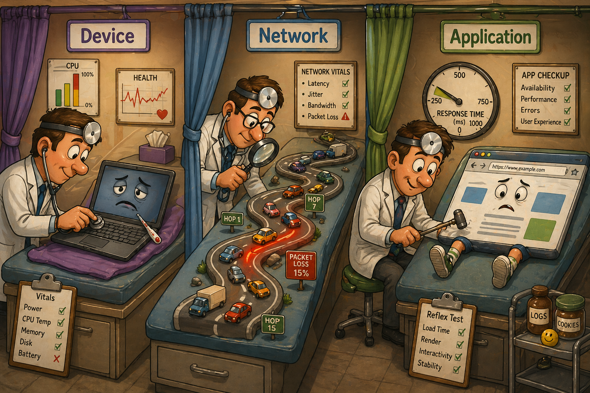
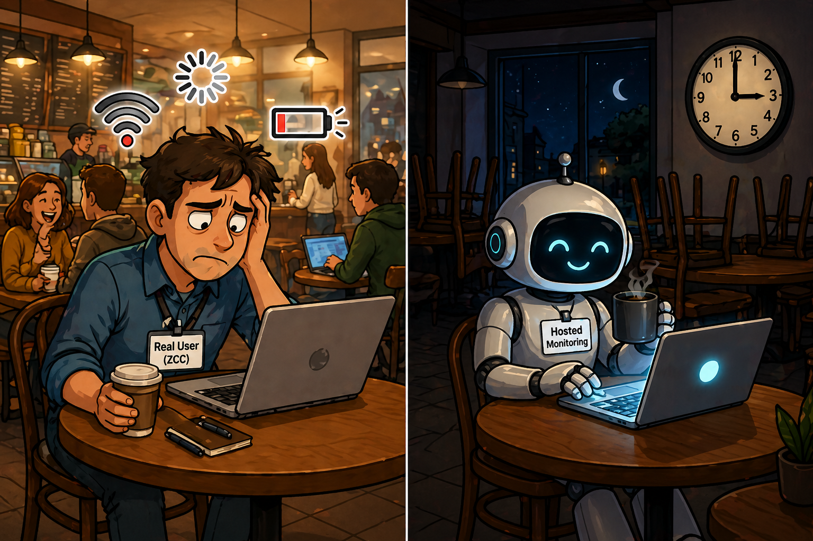
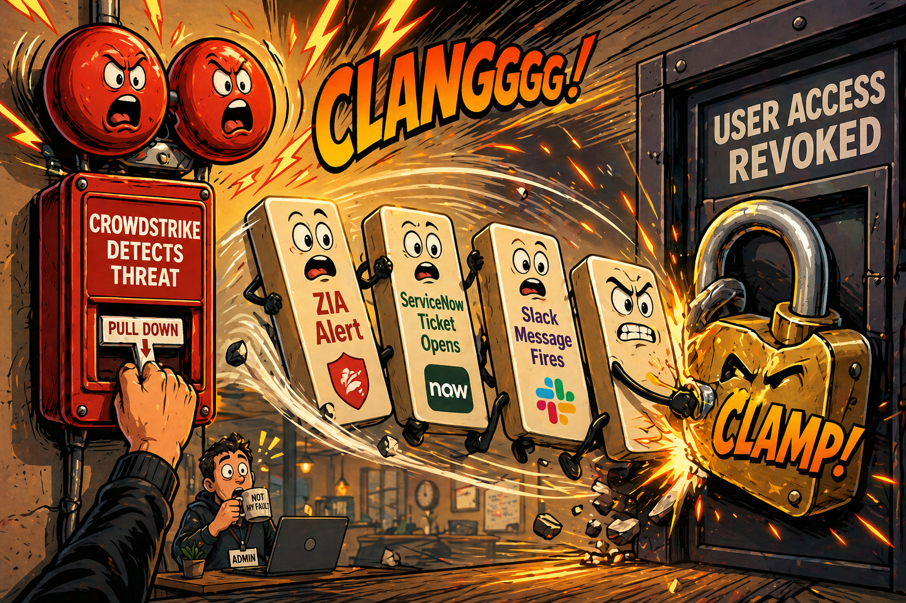
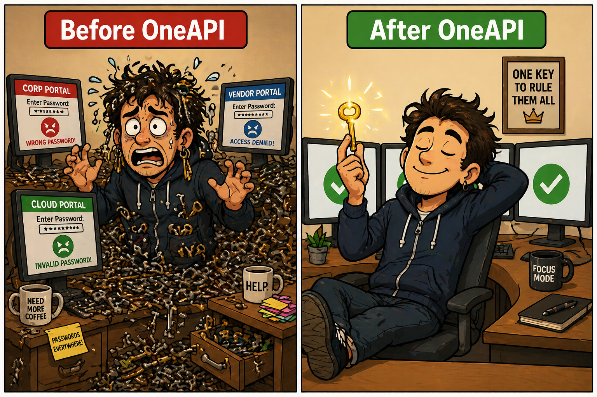
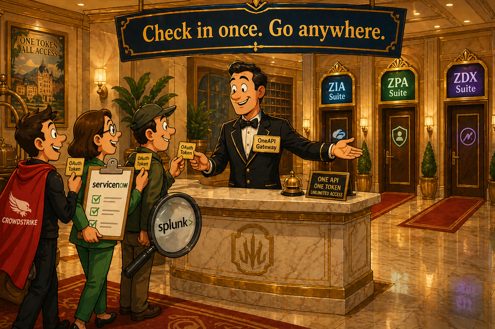

Operating & Controlling ZDX
In Day 07, we built ZDX from the ground up — metrics, probes, scoring, alerts, and diagnostics. Today's first half focuses on who can see what (RBAC), what's happening on endpoints (Device & Process Inventory), and how the data is presented (Dashboards & Hosted Monitoring).
RBAC in ZDX
Role-Based Access Control in ZDX is built on three interlocking layers. Understanding each layer individually — and knowing which symptom maps to which layer — is essential for the exam.
The Three Layers
ZDX Access Levels
| Access Level | What it allows | Typical Use |
|---|---|---|
| Full | View + configure everything within scope | ZDX Administrators |
| View Only | Read-only access to dashboards and data | Help Desk, Auditors |
| Custom | Tailored combination of sections and permissions | Scoped engineers, regional teams |
| None | No ZDX access | Default for non-ZDX admins |
Symptom → Cause Mapping
The exam describes an admin who can't do something — you need to identify which RBAC layer is the cause.
| Symptom | Most Likely Cause |
|---|---|
| Admin sees APAC users but not EU users | Scope — restricted to APAC locations only |
| Admin can see all users but "Run Deep Trace" is greyed out | Permission — granular Deep Trace permission not enabled in the role |
| Admin sees empty dashboards — no users, no devices | Scope — assigned to a location/group with no users |
| Admin sees no menu items at all | Role — no view permissions enabled in the role definition |
Scope = which floors and rooms the card opens
Permissions = whether you can just enter, or also adjust the thermostat and minibar settings
Device & Process Inventory
ZDX collects two types of endpoint inventory through the Zscaler Client Connector. Each answers a different troubleshooting question and has different timing characteristics.
| Feature | Device Inventory 🚗 | Process Inventory 🔧 |
|---|---|---|
| What it shows | The device itself — OS, version, hardware, hostname, ZCC version, location | What's running on the device — apps, CPU/memory usage per process |
| Question it answers | "What is this machine?" | "What is this machine doing right now?" |
| Update frequency | Periodic / session-based | Metrics updated every 1 minute |
| Display refresh | — | Top processes displayed every 5 minutes |
| Prerequisite | ZCC installed + minimum version | ZCC installed + minimum version + granular permission enabled |
| Sensitivity | Moderate | High — shows what apps/processes exist on a user's device |
The probe quietly updates metrics every 1 minute (collecting data continuously), but only refreshes the "top processes" display every 5 minutes. Like a chef tasting the soup every minute but only plating it for the food critic every 5. 🍲
Troubleshooting Pattern — The ZDX Drill-Down
ZDX Dashboards & Hosted Monitoring
The Three Diagnostic Lenses
ZDX organises its data around three diagnostic viewpoints, each isolating a different potential layer of failure.

| Lens | Question it answers | Key metrics |
|---|---|---|
| 📱 Device | "Is the user's machine the problem?" | CPU, memory, Wi-Fi signal, battery, ZDX device score |
| 🌐 Network (Cloud Path) | "Is the path between user and app the problem?" | Hop count, latency, packet loss at each network hop |
| 🖥️ Application | "Is the app itself the problem?" | Page Fetch Time, DNS Time, Server Response Time (TTFB), Availability |
Additional Dashboard Views
- User Dashboard — focused on a single user and their experience across all apps and devices
- Geo / Locations View — where are problems concentrated geographically?
- Department View — which org units are most affected?
- Application Dashboard — all users of a specific app, showing average scores and trends over time
- Incidents Overview — uses AI/ML to categorise and prioritise incidents across WiFi, Last Mile ISP, Zscaler Data Centre, and Application
Hosted Monitoring
Standard ZDX relies on ZCC running on real user endpoints. Hosted Monitoring runs probes from Zscaler-hosted synthetic endpoints in the cloud, completely independent of real users.

| Feature | Standard ZDX (ZCC-based) | Hosted Monitoring |
|---|---|---|
| Probe source | Real user's device (via ZCC) | Zscaler cloud-hosted synthetic endpoint |
| Requires real users? | Yes — ZCC must be installed and running | No — runs independently 24/7 |
| Measures last-mile? | Yes — full end-to-end from device | No — does not reflect user's last-mile experience |
| Best for | Real user experience troubleshooting | App availability, pre-deployment baselining, lights-out sites |
| Works at 3am? | Only if users are online | Yes — always running |
2. Lights-out branch offices — monitor sites before or during deployment
3. Pre-deployment baselining — test a new SaaS app from multiple regions before rollout
4. Geographic coverage gaps — measure performance from regions with few real users
Hosted Monitoring = a robot that periodically checks if the store's door opens and the lights are on — useful, but it can't tell you if the checkout is slow. 🤖🏪
No users / synthetic / 24/7 / pre-deployment? → Hosted Monitoring.
Making Zscaler Talk & Act
The second half of Day 08 shifts from observing your environment to automating action within it. Zero Trust Automation is about connecting Zscaler to the broader security ecosystem and enabling machine-speed responses — without waiting for a human to intervene.
AI Influence & Workflow Automation
AI-Assisted vs AI-Automated
The most important distinction in this section — a frequent exam scenario — is the difference between Zscaler helping a human decide versus Zscaler acting on its own.
| Model | What happens | Human in the loop? | Response time |
|---|---|---|---|
| 🤖 AI-Assisted | Detects event, flags it, alerts admin, waits for human decision | ✅ Yes | Minutes to hours |
| ⚡ AI-Automated | Detects event, triggers action (block, quarantine, ticket) immediately | ❌ No | Seconds |
"Notifies the administrator" / "recommends an action" → AI-Assisted
In a live compromise or ransomware scenario, AI-Automated is always the right answer — the time window matters critically. 30 minutes of human response time = a major breach.
Key AI Features in Zscaler
Workflow Automation — Trigger → Action
Workflow Automation connects Zscaler to the broader security ecosystem using a classic trigger-action model. Zscaler can sit on either side.

| Zscaler Role | Example | Direction |
|---|---|---|
| 🔴 Trigger (source) | ZIA detects malware → automatically opens a ServiceNow incident | Zscaler → external system |
| 🟢 Action (destination) | CrowdStrike detects compromised device → tells Zscaler to revoke user access | External system → Zscaler |
| 🔴 Trigger | ZDX alert fires → forwards alert data into ServiceNow ticket automatically | Zscaler → external system |
| 🟢 Action | Okta detects account compromise → Zscaler immediately blocks that user's access | External system → Zscaler |
OneAPI Framework
OneAPI is Zscaler's unified API gateway — a single standardised entry point for programmatic access to all Zscaler services (ZIA, ZPA, ZDX) through one endpoint, one authentication flow, and one token.

The Problem OneAPI Solves
Before OneAPI, any integration required separate registration, separate authentication, separate tokens, and separate endpoints for each Zscaler product. Three integrations = three times the complexity and three times the attack surface.
OneAPI's Four Superpowers
| Superpower | What it means | Exam relevance |
|---|---|---|
| 🌍 Globally Distributed | API gateways distributed across global regions for low latency | Performance and availability of API calls |
| 🗺️ Geographic Aware | Requests automatically routed to the closest regional gateway | Optimises API performance without manual configuration |
| ☁️ Zscaler Cloud Agnostic | One single endpoint for ZIA, ZPA, and ZDX — no juggling multiple URLs | Simplifies integration code and reduces errors |
| 🔑 Authenticate Once | ZIdentity OAuth — one token grants access to all Zscaler services | Most-tested feature — 3 tokens before → 1 token after |

OneAPI Components
Refresh Token = the HR file locked in a drawer that issues new badges each morning. Rarely touched, kept safe, never worn directly.
Exam Blueprint Alignment
Day 08 covers two exam domains. Together they represent approximately 18% of the exam.
High-Yield Exam Topics from Day 08
- RBAC three layers — Role vs Scope vs Permission and which symptom maps to which layer
- Process Inventory timing — 1 min (metrics) / 5 min (top processes display) — very frequently tested
- Hosted Monitoring — when to use it, what it can't do (no last-mile)
- AI-Assisted vs AI-Automated — signal phrase recognition
- Workflow Automation direction — Zscaler as trigger vs Zscaler as action destination
- OneAPI "Authenticate Once" — 3 tokens before → 1 token after
- Access Token vs Refresh Token — why short-lived, what each is used for
Trap 2: Hosted Monitoring is not a replacement for real-user monitoring — it has no visibility into last-mile issues.
Trap 3: Workflow Automation where Zscaler is the action destination (not the trigger) — external systems can instruct Zscaler to act.
Trap 4: OneAPI authenticates with ZIdentity OAuth — not ZIA credentials, not API keys.
Quick Review
Half A — ZDX Operations
| Concept | One-line answer |
|---|---|
| What are the three RBAC layers? | Role (what you can do) → Scope (who you can see) → Permission (which features are unlocked) |
| Deep Trace greyed out — which layer? | Permission — it needs its own explicit toggle in the role definition |
| Admin sees no menu items — which layer? | Role — no view permissions assigned at all |
| Process Inventory update interval? | Metrics every 1 min; top process display every 5 min |
| Hosted Monitoring vs standard ZDX? | Hosted = no ZCC needed, no last-mile; Standard = real user data, full path visibility |
| When to choose Hosted Monitoring? | 24/7 uptime, pre-deployment, lights-out sites, regions with few users |
| Three diagnostic lenses? | Device → Network (Cloud Path) → Application |
Half B — Zero Trust Automation
| Concept | One-line answer |
|---|---|
| AI-Assisted vs AI-Automated? | Assisted = human approves; Automated = machine acts without human |
| Signal phrase for AI-Automated? | "Automatically triggered" / "without manual intervention" |
| Zscaler as workflow trigger? | Zscaler detects event → tells external system (e.g. opens ServiceNow ticket) |
| Zscaler as workflow action? | External system detects event → tells Zscaler to act (e.g. CrowdStrike → revoke access) |
| OneAPI's main benefit? | One registration, one auth token, one endpoint for ZIA + ZPA + ZDX |
| Access Token vs Refresh Token? | Access = short-lived, used in API calls; Refresh = longer-lived, used only to get new Access Tokens |
| Why short-lived Access Tokens? | Limits blast radius if leaked — token expires and becomes worthless |